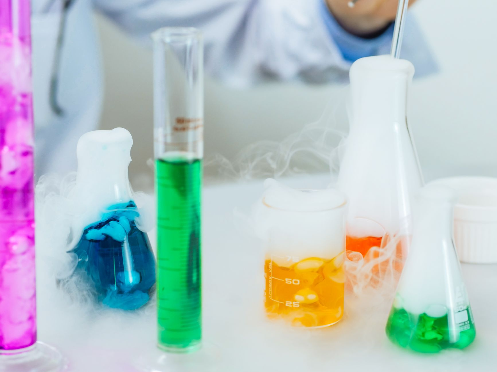

소부장 4조 투자 7년, 이제 수출로 증명해야

2019년 일본 수출규제 대응 이후 정부 소부장 누적 지원액은 4조원을 넘겼다. 2026년 산업부는 지원 대상을 기존 4개에서 6개 첨단전략산업 분야로 확대하고 투자지원금을 1700억원으로 늘렸다. 추가된 분야에는 차량용 반도체 소재·AI 서버용 기판·배터리 양극재 전구체가 포함됐다.
불화수소·EUV 포토레지스트 등 핵심 소재의 국산화율은 일부 개선됐으나, EUV급 고순도 불화수소는 여전히 일본산이 60% 이상을 점유한다. 한국 소부장 기업의 해외 매출 비중은 평균 15~20% 수준이며, TSMC·인텔 등 해외 팹으로의 직납(direct supply) 레퍼런스는 소수 대형사에 집중돼 있다.
소부장 지원 기업 중 영업이익률 5% 이상 기업은 전체의 약 30%에 불과하다는 산업부 내부 집계가 있다. 보조금 수령 후 시장화 단계에서 수익 구조를 확보하지 못한 중소 소부장 기업은 2027년 지원 일몰 이후 재무 압박에 직면할 수 있다.
차량용 반도체 소재 글로벌 시장은 2025년 기준 약 180억 달러 규모로 연 8% 성장 중이다. EUV 포토레지스트 국산화 성과를 보유한 동진쎄미켐·금호석유화학 계열은 TSMC 2nm 이하 공정 전환 가속에 따라 2027년까지 해외 팹 공급 기회가 열리는 구간에 있다.
국산화 성공의 지표는 '생산 가능 여부'였다. 그러나 공급망 인텔리전스 관점에서 진짜 지표는 '글로벌 팹이 해당 소재를 스펙인했는가'다. 스펙인 레퍼런스 없는 국산 소재는 삼성·SK 내부 발주가 멈추는 순간 즉시 재고 과잉으로 전환된다.
소부장 2.0 과제는 수입 대체(import substitution)에서 글로벌 공급망 편입(global spec-in)으로의 전환이다. 일본 JSR·신에쓰화학은 정부 주도 'supply chain diplomacy'로 TSMC·인텔과의 장기 공급계약을 체결했다. 한국은 이 '중간 연결' 외교 역할이 아직 없다.
6개 분야 확대 정책이 실질적 성과를 내려면 지원 요건에 '글로벌 팹 스펙인 레퍼런스 확보 계획'을 조건으로 추가해야 한다. 보조금만으로는 18~24개월의 해외 팹 퀄리피케이션(qualification) 비용을 감당하기 어렵다.
차량용 반도체 소재 기업: 소부장 신규 6개 분야에 차량용이 포함되면서 특수 소재 기업의 지원 수혜 범위가 넓어졌다. 차량용 반도체 소재 시장 연 8% 성장 속도는 일반 반도체 소재(연 5%)보다 빠르다.
EUV 포토레지스트 국산화 기업: TSMC·삼성 2nm 이하 공정 전환이 2026~2028년 집중되면서 EUV 소모품 수요가 급증한다. 동진쎄미켐 등은 국내 양산 실적을 해외 팹 퀄 신청의 레버리지로 활용할 수 있는 타이밍이다.
단순 국산화 완료 기업: 고순도 불화수소·알루미나처럼 국산화는 됐지만 글로벌 스펙인이 없는 소재 기업은 삼성·SK 내부 발주 의존도가 90% 이상이어서 수요처 다각화 없이는 성장 정체가 불가피하다.
보조금 의존 중소 소부장 기업: 영업이익률 5% 미만이 전체 70%에 달하는 구조에서 2027년 지원 일몰 이후 R&D 시장화에 실패한 기업은 재무 리스크에 직면한다. 정책 수혜 기업이라도 수익 구조 검증은 별개다.
구매담당자는 소부장 기업 평가 시 '국산화 성공 여부'보다 '글로벌 팹 스펙인 레퍼런스 수'를 핵심 지표로 요구하라. 스펙인 레퍼런스가 국내 1개사에 한정된 기업의 장기 공급 계약은 수요처 집중 리스크를 내포한다.
투자자는 소부장 6개 분야 확대 수혜 기업을 보조금 수령 여부가 아니라 해외 매출 비중 증가율로 검증해야 한다. 2026~2027년 사업보고서에서 수출 매출 비중이 20%를 초과하거나 전년 대비 5%p 이상 상승하는 기업을 선별 기준으로 삼을 것을 권장한다.
전략가는 소부장 2.0 정책 설계에서 글로벌 팹과의 장기 공급계약을 정부가 매개하는 'B2G-to-B' 외교 프레임을 도입해야 한다. 일본 JAST 협력 네트워크가 해외 팹과 직접 소재 공급을 연결한 구조가 참고 모델이다.
실제 조달 현장에서는 — 국산 소재가 삼성·SK 내부 테스트를 통과해도 TSMC·인텔 등 해외 팹의 별도 퀄리피케이션에 18~24개월이 추가로 소요된다. 이 '글로벌 퀄 갭'을 메우는 프로그램이 정책에 없으면 소부장 국산화 성과는 내수에 갇혀 정책 효과의 절반을 증발시킨다.
이 포스팅은 쿠팡 파트너스 활동의 일환으로 수수료를 제공받습니다.